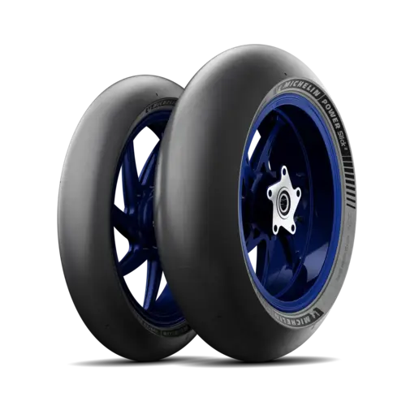
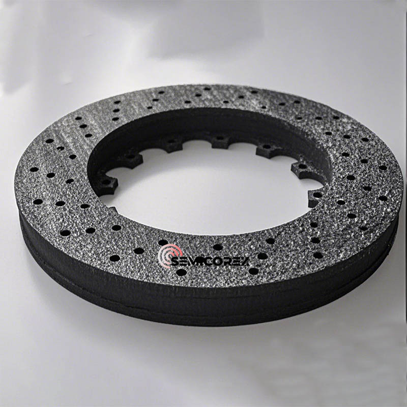
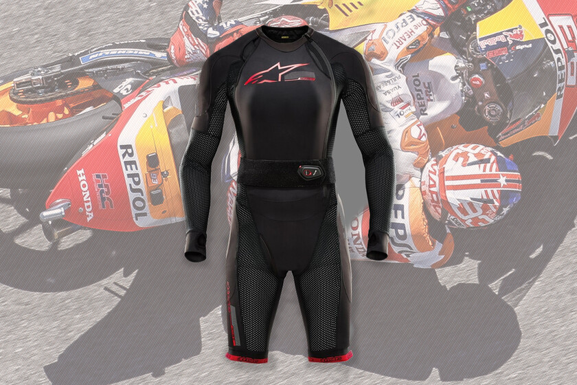

Museo
MotoGP
Inicio
Exposiciones
Horario
Entradas
Ubicación
Contacto
Galería: Tecnología en pista
Las piezas que hacen posible ir rápido y de forma segura.

Llanta slick, sin dibujo, para un mejor agarre en las curvas de la pista.

Disco de freno de fibra decarbono, aguanta temperaturas de mas de 700°C.

Traje con airbag que se infla cuando detecta una caída.
Campeones del mundo
Volver a exposiciones
Máquinas de leyenda